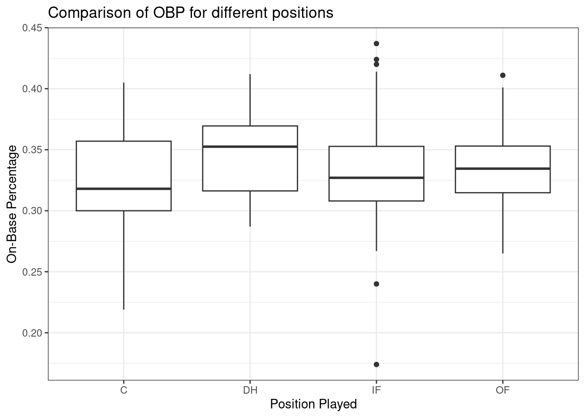
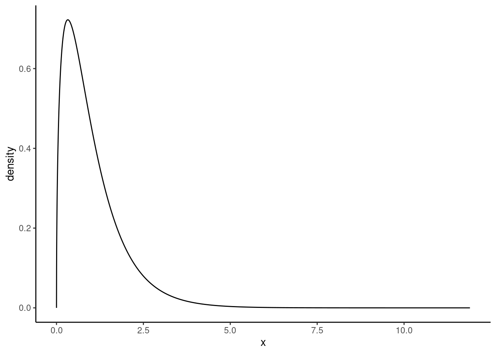
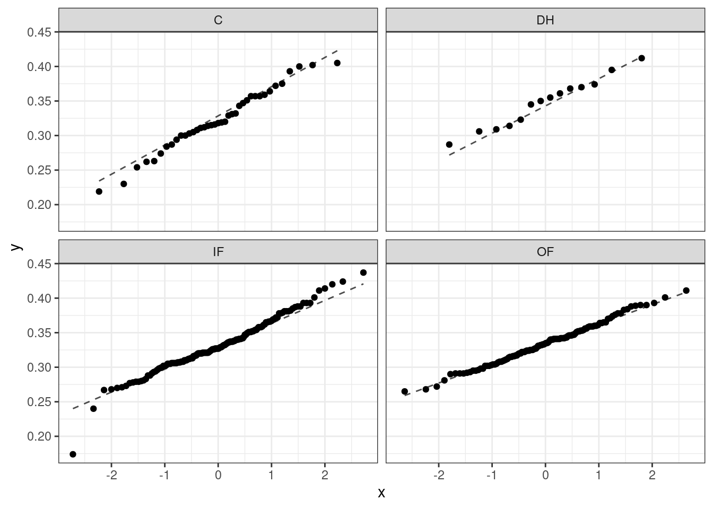
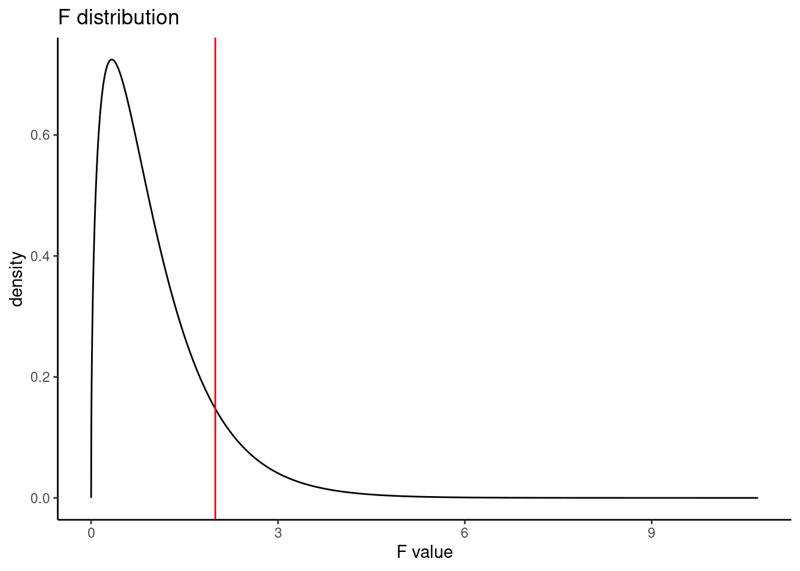
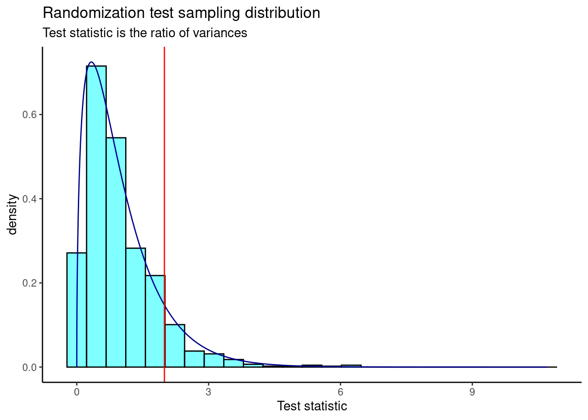
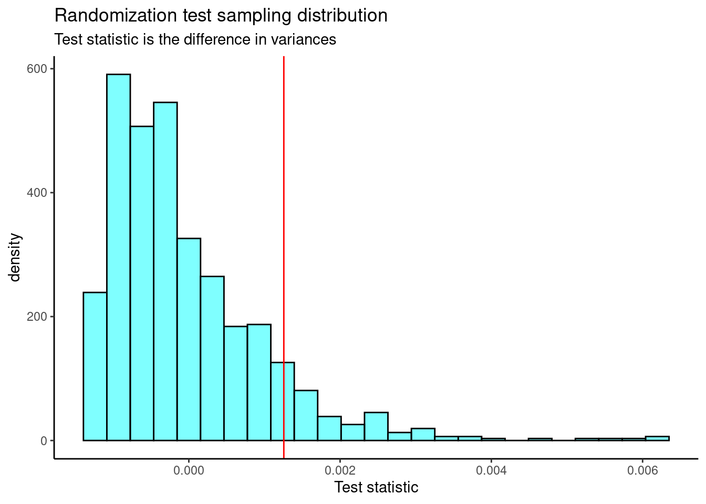

mlb_obp <- read_csv("data/mlb_obp.csv")23 Analysis of Variance
23.1 Objectives
Conduct and interpret a hypothesis test for equality of two or more means using both permutation and the \(F\) distribution.
Know and check the assumptions for ANOVA.
23.2 Introduction
In the last chapter, we learned about the chi-squared distribution, and used both mathematically derived tests (Pearson’s chi-squared test) and randomization tests to determine whether two categorical variables are independent. We also examined settings with one categorical and one numerical variable, testing for equality of means and equality of variances in two samples.
In this chapter, we will learn how to compare more than two means simultaneously.
23.3 Comparing more than two means
In contrast to last chapter, we now want to compare means across more than two groups. Again, we have two variables, where one is continuous (numerical) and the other is categorical. We might initially think to do pairwise comparisons, such as two sample t-tests, as a solution. Suppose we have three groups for which we want to compare means. We might be tempted to compare the first mean with the second, then the first mean with the third, and then finally compare the second and third means, for a total of three comparisons. However, this strategy can be treacherous. If we have many groups and do many comparisons, the Type 1 error is inflated and it is likely that we will eventually find a difference just by chance, even if there is no difference in the populations.
In this chapter, we will learn a new method called analysis of variance (ANOVA) and a new test statistic called the \(F\) statistic. ANOVA uses a single hypothesis test to determine whether the means across many groups are equal. The hypotheses are:
\(H_0\): The mean outcome is the same across all groups. In statistical notation, \(\mu_1 = \mu_2 = \cdots = \mu_k\) where \(\mu_i\) represents the mean of the outcome for observations in category \(i\).
\(H_A\): At least one mean is different.
Generally we must check three conditions on the data before performing ANOVA with the \(F\) distribution:
- the observations are independent within and across groups,
- the data within each group are nearly normal, and
- the variability across the groups is about equal.
When these three conditions are met, we may perform an ANOVA, using the \(F\) distribution, to determine whether the data provide strong evidence against the null hypothesis that all the group means, \(\mu_i\), are equal.
23.3.1 MLB batting performance
Let’s revisit the MLB batting performance example. We would like to discern whether there are real differences between the batting performance of baseball players according to their position. We will now consider all four positions from the dataset: outfielder (OF), infielder (IF), designated hitter (DH), and catcher (C). The data is available in the mlb_obp.csv file. As a reminder, batting performance is measured by on-base percentage.
Read the data into R.
Let’s review our data:
inspect(mlb_obp)
categorical variables:
name class levels n missing
1 position character 4 327 0
distribution
1 IF (47.1%), OF (36.7%), C (11.9%) ...
quantitative variables:
name class min Q1 median Q3 max mean sd n missing
1 obp numeric 0.174 0.309 0.331 0.3545 0.437 0.332159 0.03570249 327 0Next, change the variable position to a factor to give us greater control.
mlb_obp <- mlb_obp %>%
mutate(position = as.factor(position))Let’s look at summary statistics of the on-base percentage by position, this time considering all four positions.
favstats(obp ~ position, data = mlb_obp) position min Q1 median Q3 max mean sd n missing
1 C 0.219 0.30000 0.3180 0.35700 0.405 0.3226154 0.04513175 39 0
2 DH 0.287 0.31625 0.3525 0.36950 0.412 0.3477857 0.03603669 14 0
3 IF 0.174 0.30800 0.3270 0.35275 0.437 0.3315260 0.03709504 154 0
4 OF 0.265 0.31475 0.3345 0.35300 0.411 0.3342500 0.02944394 120 0The means for each group are pretty similar to each other.
Exercise: The null hypothesis under consideration is the following: \(\mu_{OF} = \mu_{IF} = \mu_{DH} = \mu_{C}\). Write the null and corresponding alternative hypotheses in plain language.1
Exercise:
Construct side-by-side boxplots.
Figure 25.1 shows the side-by-side boxplots for all four positions.

The largest difference between the sample means appears to be between the designated hitter and the catcher positions. Consider again the original hypotheses:
\(H_0\): \(\mu_{OF} = \mu_{IF} = \mu_{DH} = \mu_{C}\)
\(H_A\): The average on-base percentage (\(\mu_i\)) varies across some (or all) groups.
Thought question: Why might it be inappropriate to run the test by simply estimating whether the difference of \(\mu_{DH}\) and \(\mu_{C}\) is statistically significant at an \(\alpha = 0.05\) significance level?
The primary issue here is that we are inspecting the data before picking the groups that will be compared. It is inappropriate to examine all data by eye (informal testing) and only afterwards decide which parts to formally test. This is called data snooping or data fishing. Naturally, we would pick the groups with the largest differences for the formal test, leading to an inflation in the Type 1 error rate. To understand this better, let’s consider a slightly different problem.
Suppose we are to measure the aptitude for students in 20 classes of a large elementary school at the beginning of the year. In this school, all students are randomly assigned to classrooms, so any differences we observe between the classes at the start of the year are completely due to chance. However, with so many groups, we will probably observe a few groups that look rather different from each other. If we select only the classes that look really different, we will probably make the wrong conclusion that the assignment wasn’t random. While we might only formally test differences for a few pairs of classes, we informally evaluated the other classes by eye before choosing the most extreme cases for a comparison.
In the next section, we will learn how to use the \(F\) statistic and ANOVA to test whether observed differences in means could have happened just by chance, even if there was no true difference in the respective population means.
23.3.2 Analysis of variance (ANOVA) and the F test
The method of analysis of variance (ANOVA) in this context focuses on answering one question: is the variability in the sample means so large that it seems unlikely to be from chance alone? This question is different from earlier testing procedures because we will simultaneously consider many groups, and evaluate whether their sample means differ more than we would expect from natural variation. We call this variability the mean square between groups (\(MSG\)), and it has an associated degrees of freedom, \(df_{G} = k - 1\), when there are \(k\) groups. The \(MSG\) can be thought of as a scaled variance formula for means. If the null hypothesis is true, any variation in the sample means is due to chance and shouldn’t be too large. We typically use software to find the \(MSG\); however, the mathematical derivation follows. Let \(\bar{x}_i\) represent the mean outcome for observations in group \(i\), and let \(\bar{x}\) represent the mean outcome across all groups. Then, the mean square between groups is computed as
\[ MSG = \frac{1}{df_{G}}SSG = \frac{1}{k - 1}\sum_{i = 1}^{k} n_{i}\left(\bar{x}_{i} - \bar{x}\right)^2, \]
where \(SSG\) is called the sum of squares between groups and \(n_{i}\) is the sample size of group \(i\).
The mean square between the groups is, on its own, quite useless in a hypothesis test. We need a benchmark value for how much variability is expected among the sample means, if the null hypothesis is true. To this end, we compute a pooled variance estimate, often abbreviated as the mean squared error (\(MSE\)), which has an associated degrees of freedom of \(df_E = n - k\). It is helpful to think of the \(MSE\) as a measure of the variability within the groups. To find the \(MSE\), the sum of squares total (\(SST\))} is computed as
\[SST = \sum_{i = 1}^{n} \left(x_{i} - \bar{x}\right)^2,\]
where the sum is over all observations in the data set. Then we compute the sum of squared errors (\(SSE\)) in one of two equivalent ways:
\[ SSE = SST - SSG = (n_1 - 1)s_1^2 + (n_2 - 1)s_2^2 + \cdots + (n_k - 1)s_k^2, \]
where \(s_i^2\) is the sample variance (square of the standard deviation) of the observations in group \(i\). Then the \(MSE\) is the standardized form of \(SSE\):
\[MSE = \frac{1}{df_{E}}SSE\]
When the null hypothesis is true, any differences among the sample means are only due to chance, and the \(MSG\) and \(MSE\) should be about equal. For ANOVA, we examine the ratio of \(MSG\) and \(MSE\) in the \(F\) test statistic:
\[F = \frac{MSG}{MSE}\]
The \(MSG\) represents a measure of the between-group variability, and \(MSE\) measures the variability within each of the groups. Using a randomization test, we could also look at the difference in the mean squared errors as a test statistic instead of the ratio.
We can use the \(F\) statistic to evaluate the hypotheses in what is called an F test. A \(p\)-value can be computed from the \(F\) statistic using an \(F\) distribution, which has two associated parameters: \(df_{1}\) and \(df_{2}\). For the \(F\) statistic in ANOVA, \(df_{1} = df_{G}\) and \(df_{2}= df_{E}\). The \(F\) statistic is really a ratio of chi-squared random variables.
The \(F\) distribution, shown in Figure 23.2, takes on positive values and is right skewed, like the chi-squared distribution. The larger the observed variability in the sample means (\(MSG\)) relative to the within-group observations (\(MSE\)), the larger \(F\) will be and the stronger the evidence against the null hypothesis. Because larger values of \(F\) represent stronger evidence against the null hypothesis, we use the upper tail of the distribution to compute a \(p\)-value.

The \(F\) statistic and the \(F\) test
Analysis of variance (ANOVA) is used to test whether the mean outcome differs across two or more groups. ANOVA uses a test statistic \(F\), which represents a standardized ratio of variability in the sample means (across the groups), relative to the variability within the groups. If \(H_0\) is true and the model assumptions are satisfied, the statistic \(F\) follows an \(F\) distribution with parameters \(df_{1} = k - 1\) and \(df_{2} = n - k\). The upper tail of the \(F\) distribution is used to represent the \(p\)-value.
23.3.2.1 ANOVA
We will use R to perform the calculations for the ANOVA. But let’s check our assumptions first.
There are three conditions we must check before conducting an ANOVA: 1) all observations must be independent, 2) the data in each group must be nearly normal, and 3) the variance within each group must be approximately equal.
Independence
All observations must be independent. More specifically, observations must be independent within and across groups. If the data are a simple random sample from less than 10% of the population, this assumption is reasonable. For processes and experiments, we must carefully consider whether the data may be independent (e.g., no paired data). In our MLB data, the data were not sampled; they consist of all players from the 2010 season with at least 200 at bats. However, there are not obvious reasons why independence would not hold for most or all observations, given our intended population is all MLB seasons (or something similar). This requires a bit of hand waving, but remember that independence is often difficult to assess.
Approximately normal
As with one- and two-sample testing for means, the normality assumption is especially important when the sample size is quite small. When we have larger data sets (and larger groups) and there are no extreme outliers, the normality condition is not usually a concern. The normal probability plots (quantile-quantile plots) for each group of the MLB data are shown below; there is some deviation from normality for infielders, but this isn’t a substantial concern since there are over 150 observations in that group and the outliers are not extreme. Sometimes in ANOVA, there are so many groups or so few observations per group that checking normality for each group isn’t reasonable. One solution is to combine the groups into one set of data. First, calculate the residuals of the baseball data, which are calculated by taking the observed values and subtracting the corresponding group means. For example, an outfielder with OBP of 0.435 would have a residual of \(0.435 - \bar{x}_{OF} = 0.082\). Then, to check the normality condition, create a normal probability plot using all the residuals simultaneously.
Figure 23.3 is the quantile-quantile plot to assess the normality assumption.

Constant variance
The final assumption is that the variance within the groups is about equal from one group to the next. This assumption is important to check, especially when the samples sizes vary widely across the groups. The constant variance assumption can be checked by examining a side-by-side box plot of the outcomes across the groups, which we did previously in Figure @ref(fig:box231-fig). In this case, the variability is similar across the four groups but not identical. We also see in the output offavstatsthat the standard deviation varies a bit from one group to the next. Whether these differences are from natural variation is unclear, so we should report the uncertainty of meeting this assumption when the final results are reported. The permutation test does not have this assumption and can be used as a check on the results from the ANOVA.
In summary, independence is always important to an ANOVA analysis, but is often difficult to assess. The normality condition is very important when the sample sizes for each group are relatively small. The constant variance condition is especially important when the sample sizes differ between groups.
Let’s write the hypotheses for the MLB example again:
\(H_0\): The average on-base percentage is equal across the four positions.
\(H_A\): The average on-base percentage varies across some (or all) groups.
The test statistic is the ratio of the between-groups variance (mean square between groups, \(MSG\)) and the pooled within-group variance (mean squared error, \(MSE\)). We perform ANOVA in R using the aov() function, and use the summary() function to extract the most important information from the output.
summary(aov(obp ~ position, data = mlb_obp)) Df Sum Sq Mean Sq F value Pr(>F)
position 3 0.0076 0.002519 1.994 0.115
Residuals 323 0.4080 0.001263 This table contains all the information we need. It has the degrees of freedom, sums of squares, mean squared errors, \(F\) test statistic, and \(p\)-value. The test statistic \(\left(\frac{MSG}{MSE}\right)\) is 1.994, \(\frac{0.002519}{0.001263} = 1.994\). The \(p\)-value is larger than 0.05, indicating the evidence is not strong enough to reject the null hypothesis at a significance level of 0.05. That is, the data do not provide strong evidence that the average on-base percentage varies by player’s primary field position.
The calculation of the \(p\)-value can also be done by finding the probability associated with the upper tail of the \(F\) distribution:
pf(1.994, 3, 323, lower.tail = FALSE)[1] 0.1147443Figure 23.4 is a plot of the \(F\) distribution with the observed \(F\) test statistic shown as a red line.

23.3.2.2 Permutation test
We can repeat the same analysis using a permutation test. We will first run it using a ratio of variances (mean squares) and then, for interest, as a difference in variances.
We need a way to extract the mean squares from the output. The broom package contains a function called tidy() that cleans up output from functions and makes them into data frames.
library(broom)aov(obp ~ position, data = mlb_obp) %>%
tidy()# A tibble: 2 × 6
term df sumsq meansq statistic p.value
<chr> <dbl> <dbl> <dbl> <dbl> <dbl>
1 position 3 0.00756 0.00252 1.99 0.115
2 Residuals 323 0.408 0.00126 NA NA Let’s summarize the values in the meansq column and develop our test statistic, the ratio of mean squares. We could just pull the statistic (using the pull() function) but we want to be able to generate a different test statistic, the difference of mean squares, as well.
aov(obp ~ position, data = mlb_obp) %>%
tidy() %>%
summarize(stat = meansq[1] / meansq[2]) # A tibble: 1 × 1
stat
<dbl>
1 1.99Now we are ready. First, get our observed test statistic using pull().
obs <- aov(obp ~ position, data = mlb_obp) %>%
tidy() %>%
summarize(stat = meansq[1] / meansq[2]) %>%
pull()
obs[1] 1.994349Let’s put our test statistic into a function that includes shuffling the position variable.
f_stat <- function(x){
aov(obp ~ shuffle(position), data = x) %>%
tidy() %>%
summarize(stat = meansq[1] / meansq[2]) %>%
pull()
}Now, we run our function.
set.seed(5321)
f_stat(mlb_obp)[1] 0.1185079Next, we run the randomization test using the do() function. There is an easier way to do all of this work with the purrr package but we will continue with the work we have started.
set.seed(5321)
results <- do(1000)*(f_stat(mlb_obp))The above code is slow in executing because the tidyverse functions inside our f_stat() function are slow.
Figure 23.5 is a plot of the sampling distribution from the randomization test. The \(F\) distribution is overlaid as a dark blue curve.

The \(p\)-value is
prop1(~(result >= obs), results)prop_TRUE
0.0959041 This is a similar \(p\)-value to the ANOVA output.
Now, let’s repeat the analysis but use the difference in variance (mean squares) as our test statistic. We’ll define a new function that calculates the test statistic and then run the randomization test.
f_stat2 <- function(x){
aov(obp ~ shuffle(position), data = x) %>%
tidy() %>%
summarize(stat = meansq[1] - meansq[2]) %>%
pull(stat)
}set.seed(5321)
results <- do(1000)*(f_stat2(mlb_obp))Figure 23.6 is the plot of the sampling distribution of the difference in variances.

We need the observed test statistic in order to calculate a \(p\)-value.
obs <- aov(obp ~ position, data = mlb_obp) %>%
tidy() %>%
summarize(stat = meansq[1] - meansq[2]) %>%
pull(stat)
obs[1] 0.001255972The \(p\)-value is
prop1(~(result >= obs), results)prop_TRUE
0.0959041 Again, we find a similar \(p\)-value.
Exercise: If we reject the null hypothesis in the ANOVA test, we know that at least one mean is different but we don’t know which one(s). How would you approach answering the question of which means are different?
\(H_0\): The average on-base percentage is equal across the four positions. \(H_A\): The average on-base percentage varies across some (or all) groups. That is, the average on-base percentage for at least one position is different.↩︎